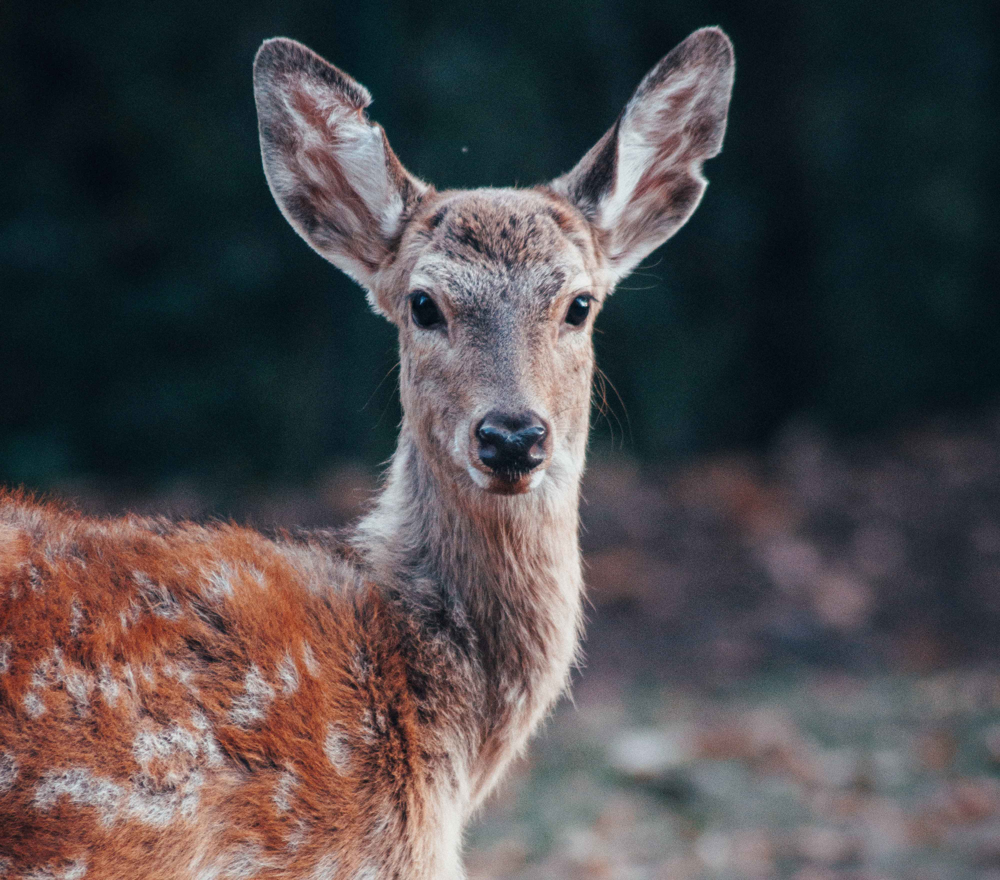

05.2011 Розроблено нову унікальну форму підкови | 11.2010 Семінар для користувачів нашої продукції | 07.2016 Юстус фон Лібіх - автор теорії мінерального живлення рослин | 03.2017 Франц Ахард - перший виробник бурякового цукру | 04.2019 Норман Борлоуг і його "Зелена революція"

Sulcus intercruralis
Бічні частини стрілки і Заворотний частини стінки утворюють з кожного боку бічні стрілочні
борозенки